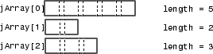
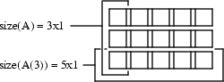

How MATLAB Represents Java Arrays
The term Java® array refers to a container object that holds a fixed number of
values of a single type. The type of an array is written as
type[]String[][].
The term dimension refers to the number of subscripts required to address the elements of an array. Dimension is not a measure of length, width, and height. For example, a 5-by-1 array is one-dimensional, because you use one subscript to access an individual element. To work with a two-dimensional array, create an array of arrays. To add further dimensions, add more levels to the array, making it an array of arrays of arrays, and so on.
MATLAB® treats multilevel Java arrays like matrices and multidimensional arrays. Use the same MATLAB syntax to access elements of a Java array.
Array Indexing
Java array indices are zero-based while MATLAB array indices are one-based. In Java programming, you access the elements of array y of length
N using y[0] through y[N-1]. When
working with this array in MATLAB, you access these elements using y(1) through
y(N).
For an example, see Access Elements of Java Array.
Shape of Java Arrays
A two-dimensional MATLAB array is a rectangle, as each row is of equal length and each column of equal height. A Java array is an array of arrays and does not necessarily hold to this rectangular form. Each individual lower-level array might have a different length.
This image shows an array of three underlying arrays of different lengths. The term jagged (or ragged) is commonly used to describe this arrangement of array elements as the array ends do not match up evenly. When a Java method returns a jagged array of primitive Java types, MATLAB stores it in a cell array.

The MATLAB
string function pads a jagged Java string array, making it a rectangular MATLAB array.
Interpret Size of Java Arrays
The MATLAB
size function returns the length of the Java array. The number of columns is always 1.
The potentially ragged shape of a Java array makes it impossible to size the array in the same way as for a MATLAB array. In a Java array, no single value represents the size of the lower-level arrays.
For example, consider this Java array.

size(A) returns the dimensions of the highest array level of A. The
highest level of the array has a size of 3-by-1.
size(A)
ans =
3 1To find the size of a lower-level array, for example the five-element array in row 3, refer to the row explicitly.
size(A(3))
ans =
5 1You can specify a dimension in the size command using the following
syntax. However, this command only sizes the first dimension, dim=1, the
only nonunary dimension.
m = size(X,dim) size(A,1)
ans =
3Interpret Number of Dimensions of Java Arrays
The MATLAB
ndims function always returns a value of 2 for the number of dimensions
in a Java array. This value is the number of dimensions in the top-level array.
Display Java Vector
MATLAB displays a Java vector as a column but processes it as if it were a row vector. For examples, see Concatenate Java Arrays.